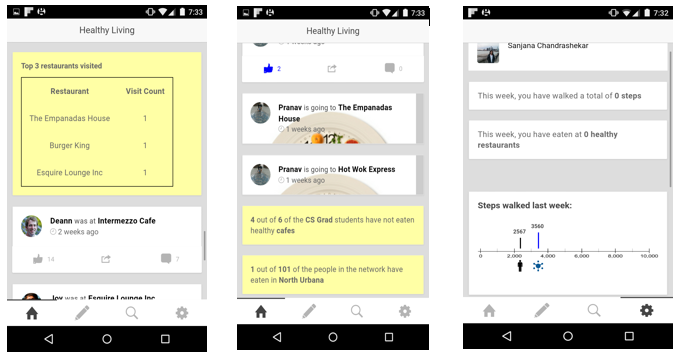

Sanjana Chandrashekar
Sanjana Chandrashekar
Work Experience
-
Intern at Intel Corporation
June 2015 - August 2015- Working on the design and development of a web-based experimentation framework for recording and performing predictive analysis on data from thermal experiments on processors.
-
Research Assistant at the University of Illinois, Urbana- Champaign
August 2014 - May 2015- Worked on the design and development of a mobile application framework to synthesize experiments to study interactions in a social network.

-
Member of Technical Staff, D E Shaw and Co.
July 2013 - July 2014- Wrote automation and set up a monitoring framework to analyze activity on the firm’s technical infrastructure and customized it to display details on the web based dashboard.
- Automated the process of parallelizing workloads across multiple clusters.
-
Intern at India Innovation Labs
Jan 2013 - May 2013- Developed a feature based classification system to classify users with similar interests based on data gathered from their social media profile.
- Built a recommendation engine to make customized recommendations on articles of interest to the classified user groups
-
Intern at CloudByte Inc.
June 2012 - August 2012- Developed the bootstrap module of a FreeBSD based storage virtualization system
- Developed, deployed and tested a scripting framework to automate the build, bootstrap and bring up of CloudByte 6.0, a FreeBSD derived storage virtualization stack.
-
Intern at Indian Institute of Science
June 2011 - August 2011- Set up an experimental Infrastructure as a Service (IaaS) cloud using the Open Nebula toolkit at SERC (Supercomputer Education and Research Centre).
- Researched using benchmarking tools (httperf, netperf) the Quality of Service (QoS) provided by Infrastructure as a Service solutions.
{kind=link}
Education
-
University of Illinois, Urbana - Champaign
August 2014 - December 2015Coursework : Data Mining | Advanced Distributed Systems | Text Information Systems | Artificial Intelligence | Data Driven Design | Social and Economic Networks |
-
R V College of Engineering, Bangalore, India
August 2009 - June 2013Coursework : Data Structures | Analysis and Design of Algorithms | Operating Systems | Computer Networks | Object Oriented Programming | Unix Systems Programming | Web Programming | Basic Mathematics
{kind=link}
{kind=link}
{kind=link}
{kind=link}
{kind=link}
{kind=link}
Projects
-
Distributed Story Picturing Service
- A service that can be used to convert text based children's stories to images automatically. Since the idea can be conveyed better when images are augmented with text, this can aid in better learning
-
Tweet - News Correlation Analysis
- This web based tool aims to analyze the opinions the the masses on Twitter express for each of the facts presented in the news.
-
Hand written digit recognition and face recognition
- Perceptrons and nearest neighbour classifiers were built to classifiy the digits and detect if an image was a face or not in a given dataset. Visualizations were created to understand the features that most contribute to the identification of the digit/face.
-
Web server log analysis with Apache Spark
- A huge log file with millions of records was analyzed in a distributed manner to understand details such as the number of 404 errors, the number of hosts serving content per day. Graphs visualizations were created to present the analyzed statistics
-
Predicting the revenue of a newly released movie- A network perspective
- The HITS algorithm with linear classifiers were applied on actor-actor collaboration and actor-movie networks that were constructed from movie datasets to predict the revenue of a newly released movie.
-
"Mood-for-Music" - A mobile app that plays music based on the user's mood
- Features of music in a user's playlist were analyzed to categorize the music to be apt for a particular mood. The music player was launched on selecting a song under a user specified mood
-
Predicting if an auction car is a good buy
- Several classifiers such as the Naive Bayes Classifier with Ada-Boost, Decision Trees, K- Nearest Neighbour classifier were built using the given attributes to predict if an auction car was a good buy or not.
-
Identifying frequent patterns in a given dataset
- The Apriori algorithm for frequent pattern mining along with the KERT algorithm for the extraction of topic related key words was constructed for the identification of patterns that occur multiple times in a given dataset.
-
Distributed Vehicular Traffic Control System at Road Junctions
- A simulation of a novel algorithm that enables vehicles in a VANET (Vehicular Ad-Hoc Network) environment to communicate among each other to determine the lane that can exit first in a traffic junction with signals.
-
"Farmisstant" - A mobile app and online tool for farmers
- An application that brings crop and market prices related information to the farmer and offers personalized suggestions to the farmer based on his preferences and needs.
-
Student - Counsellor portal
- A web based tool for the management of student- mentor related communication and information for use by the Department of Information Science at R V College of Engineering. The portal made it easier to submit documents and keep track of student progress and offer suggestions and guidance.
-
Demonstration of Indexing on a student database
{kind=link}
{kind=link}
{kind=link}
{kind=link}
{kind=link}
{kind=link}